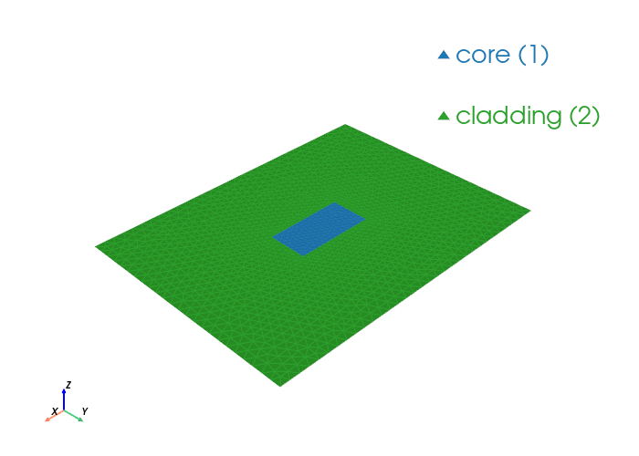

Rectangular Dielectric Waveguide Modes#
This notebook solves a dielectric core inside cladding, classifies guided modes, and plots transverse and longitudinal fields.
from palacetoolkit.mode_solver import WaveguideModeSolver, ModeMetrics
from palacetoolkit.utils import write_and_finalize_gmsh
from palacetoolkit.viz import view_mesh
import gmsh
import numpy as np
import matplotlib.pyplot as plt
def _set_lc_for_dielectric(a_core, b_core, lc_core, lc_clad):
pts = gmsh.model.getEntities(0)
for _, ptag in pts:
coord = gmsh.model.getValue(0, ptag, [])
in_core = (abs(coord[0]) <= a_core / 2 + 1e-10 and abs(coord[1]) <= b_core / 2 + 1e-10)
gmsh.model.mesh.setSize([(0, ptag)], lc_core if in_core else lc_clad)
def make_dielectric_waveguide_mesh(a_core, b_core, a_clad, b_clad, nx_core=16, ny_core=8, nx_clad=8, ny_clad=8, filename=None):
gmsh.initialize()
gmsh.option.setNumber("General.Verbosity", 0)
gmsh.model.add("dielectric_waveguide")
clad = gmsh.model.occ.addRectangle(-a_clad / 2, -b_clad / 2, 0, a_clad, b_clad)
core = gmsh.model.occ.addRectangle(-a_core / 2, -b_core / 2, 0, a_core, b_core)
_, outmap = gmsh.model.occ.fragment([(2, clad)], [(2, core)])
gmsh.model.occ.synchronize()
core_surfs = [tag for _, tag in outmap[1]]
clad_surfs = [tag for _, tag in outmap[0] if tag not in core_surfs]
gmsh.model.addPhysicalGroup(2, core_surfs, tag=1, name="core")
gmsh.model.addPhysicalGroup(2, clad_surfs, tag=2, name="cladding")
all_surfs = [(2, t) for t in core_surfs + clad_surfs]
outer_bnd = gmsh.model.getBoundary(all_surfs, oriented=False, combined=True)
pec_tags = [abs(tag) for _, tag in outer_bnd]
gmsh.model.addPhysicalGroup(1, pec_tags, tag=1, name="PEC")
lc_core = min(a_core / nx_core, b_core / ny_core)
lc_clad = max(lc_core * max(nx_core / nx_clad, ny_core / ny_clad), 1.5 * lc_core)
_set_lc_for_dielectric(a_core, b_core, lc_core, lc_clad)
gmsh.model.mesh.generate(2)
return write_and_finalize_gmsh(filename, prefix="wg_diel_")
a_core, b_core = 1.0, 0.5
a_clad, b_clad = 4.0, 3.0
eps_core, eps_clad = 4.0, 1.0
mu = 1.0
k0_cutoff_approx = np.pi / a_core / np.sqrt(eps_core - eps_clad)
omega = 3.0 * k0_cutoff_approx
kn_min = omega * np.sqrt(mu * eps_clad)
kn_max = omega * np.sqrt(mu * eps_core)
print(f"Guided-mode window: {kn_min:.4f} < kn < {kn_max:.4f}")
Guided-mode window: 5.4414 < kn < 10.8828
mesh_file = make_dielectric_waveguide_mesh(
a_core,
b_core,
a_clad,
b_clad,
nx_core=16,
ny_core=8,
nx_clad=8,
ny_clad=8,
)
view_mesh(mesh_file)
solver = WaveguideModeSolver(
mesh_file=mesh_file,
order=2,
pec_bdr=[1],
materials=[
{"attrs": [1], "eps_r": eps_core, "mu_r": mu},
{"attrs": [2], "eps_r": eps_clad, "mu_r": mu},
],
omega=omega,
)
results = solver.solve(num_modes=10, mode_idx=1, target=0.0, save=0, num_procs=4)
print("Computed modes:")
for i in sorted(results):
kn = results[i].k_n
if kn_min < kn.real < kn_max:
mode_type = "guided"
elif abs(kn.imag) > 0.1 * abs(kn.real):
mode_type = "evanescent"
else:
mode_type = "radiation/substrate"
print(f" Mode {i:2d}: kn={kn.real:+10.6f}{kn.imag:+10.6f}j [{mode_type}]")
Loading mesh file: /tmp/wg_diel_ijgr173t.msh
Groups to render transparent: ['air_none', 'air_plastic_enclosure']
Mesh loaded successfully with 2 cell blocks
Found 3122 triangles total
Physical group tags in mesh: {1: 'core', 2: 'cladding'}

Running: /home/martin/.cache/palacetoolkit/runtime/palace-cpu-v0.17.0/bin/palace --serial /tmp/wg_diel_ijgr173t_modes/config.json
>> /home/martin/.cache/palacetoolkit/runtime/palace-cpu-v0.17.0/bin/palace-x86_64.bin /tmp/wg_diel_ijgr173t_modes/config.json
_____________ _______
_____ __ \____ __ /____ ____________
____ /_/ / __ ` / / __ ` / ___/ _ \
___ _____/ /_/ / / /_/ / /__/ ___/
/__/ \___,__/__/\___,__/\_____\_____/
Git changeset ID: v0.17.0-194-g01f5d9bd1
Running with 1 MPI process, 1 OpenMP thread
Device configuration: omp,cpu
Memory configuration: host-std
libCEED backend: /cpu/self/xsmm/blocked
Added 48 boundary elements for material interfaces to the mesh
Characteristic length and time scales:
Lc = 4.000e+00 m, tc = 1.334e+01 ns
Finished partitioning mesh into 1 subdomain
Mesh curvature order: 1
Mesh bounding box:
(Xmin, Ymin) = (-2.000e+00, -1.500e+00) m
(Xmax, Ymax) = (+2.000e+00, +1.500e+00) m
Parallel Mesh Stats:
minimum average maximum total
vertices 1618 1618 1618 1618
edges 4739 4739 4739 4739
elements 3122 3122 3122 3122
neighbors 0 0 0
minimum maximum
h 0.0121447 0.0356425
kappa 1 2.03476
Estimated current per-rank memory usage is: Min. 52.9M, Max. 52.9M, Avg. 52.9M, Total 52.9M
Estimated current per-node memory usage is: Min. 52.9M, Max. 52.9M, Avg. 52.9M, Total 52.9M
Configuring 2D waveguide mode analysis at f = 2.598e-01 GHz (omega = 2.178066e+01)
ND space: 15722 DOFs, H1 space: 6357 DOFs, total: 22079
Auto kn_target = 4.568750e+01 (from max(mu_r) * max(epsilon_r) = 4.000000e+00)
Solving GEP for 10 propagation mode(s)...
Residual norms for GMRES solve
0 (restart 0) KSP residual norm 1.484753e-01
1 (restart 0) KSP residual norm 1.074814e-14
GMRES solver converged in 1 iteration (avg. reduction factor: 7.239e-14)
Residual norms for GMRES solve
0 (restart 0) KSP residual norm 7.859058e-03
1 (restart 0) KSP residual norm 6.280013e-16
GMRES solver converged in 1 iteration (avg. reduction factor: 7.991e-14)
Residual norms for GMRES solve
0 (restart 0) KSP residual norm 6.616666e-03
1 (restart 0) KSP residual norm 6.041397e-16
GMRES solver converged in 1 iteration (avg. reduction factor: 9.131e-14)
Residual norms for GMRES solve
0 (restart 0) KSP residual norm 9.170070e-03
1 (restart 0) KSP residual norm 3.718077e-16
GMRES solver converged in 1 iteration (avg. reduction factor: 4.055e-14)
Residual norms for GMRES solve
0 (restart 0) KSP residual norm 4.088504e-03
1 (restart 0) KSP residual norm 2.014263e-16
GMRES solver converged in 1 iteration (avg. reduction factor: 4.927e-14)
Residual norms for GMRES solve
0 (restart 0) KSP residual norm 8.239904e-03
1 (restart 0) KSP residual norm 5.361130e-16
GMRES solver converged in 1 iteration (avg. reduction factor: 6.506e-14)
Residual norms for GMRES solve
0 (restart 0) KSP residual norm 3.986859e-03
1 (restart 0) KSP residual norm 3.173534e-16
GMRES solver converged in 1 iteration (avg. reduction factor: 7.960e-14)
Residual norms for GMRES solve
0 (restart 0) KSP residual norm 7.152904e-03
1 (restart 0) KSP residual norm 3.881413e-16
GMRES solver converged in 1 iteration (avg. reduction factor: 5.426e-14)
Residual norms for GMRES solve
0 (restart 0) KSP residual norm 5.265599e-03
1 (restart 0) KSP residual norm 3.267121e-16
GMRES solver converged in 1 iteration (avg. reduction factor: 6.205e-14)
Residual norms for GMRES solve
0 (restart 0) KSP residual norm 2.235858e-03
1 (restart 0) KSP residual norm 1.434801e-16
GMRES solver converged in 1 iteration (avg. reduction factor: 6.417e-14)
Residual norms for GMRES solve
0 (restart 0) KSP residual norm 7.185478e-03
1 (restart 0) KSP residual norm 3.889154e-16
GMRES solver converged in 1 iteration (avg. reduction factor: 5.413e-14)
Residual norms for GMRES solve
0 (restart 0) KSP residual norm 6.768621e-03
1 (restart 0) KSP residual norm 3.915059e-16
GMRES solver converged in 1 iteration (avg. reduction factor: 5.784e-14)
Residual norms for GMRES solve
0 (restart 0) KSP residual norm 1.515014e-03
1 (restart 0) KSP residual norm 1.015454e-16
GMRES solver converged in 1 iteration (avg. reduction factor: 6.703e-14)
Residual norms for GMRES solve
0 (restart 0) KSP residual norm 3.533081e-03
1 (restart 0) KSP residual norm 2.497288e-16
GMRES solver converged in 1 iteration (avg. reduction factor: 7.068e-14)
Residual norms for GMRES solve
0 (restart 0) KSP residual norm 4.992352e-03
1 (restart 0) KSP residual norm 2.998172e-16
GMRES solver converged in 1 iteration (avg. reduction factor: 6.006e-14)
Residual norms for GMRES solve
0 (restart 0) KSP residual norm 5.229685e-03
1 (restart 0) KSP residual norm 3.431405e-16
GMRES solver converged in 1 iteration (avg. reduction factor: 6.561e-14)
Residual norms for GMRES solve
0 (restart 0) KSP residual norm 3.872122e-03
1 (restart 0) KSP residual norm 2.191955e-16
GMRES solver converged in 1 iteration (avg. reduction factor: 5.661e-14)
Residual norms for GMRES solve
0 (restart 0) KSP residual norm 1.016679e-02
1 (restart 0) KSP residual norm 5.318105e-16
GMRES solver converged in 1 iteration (avg. reduction factor: 5.231e-14)
Residual norms for GMRES solve
0 (restart 0) KSP residual norm 1.369257e-02
1 (restart 0) KSP residual norm 6.497862e-16
GMRES solver converged in 1 iteration (avg. reduction factor: 4.746e-14)
Residual norms for GMRES solve
0 (restart 0) KSP residual norm 1.044957e-02
1 (restart 0) KSP residual norm 6.847077e-16
GMRES solver converged in 1 iteration (avg. reduction factor: 6.552e-14)
Residual norms for GMRES solve
0 (restart 0) KSP residual norm 6.181825e-03
1 (restart 0) KSP residual norm 4.785485e-16
GMRES solver converged in 1 iteration (avg. reduction factor: 7.741e-14)
Residual norms for GMRES solve
0 (restart 0) KSP residual norm 6.630570e-03
1 (restart 0) KSP residual norm 3.946235e-16
GMRES solver converged in 1 iteration (avg. reduction factor: 5.952e-14)
Residual norms for GMRES solve
0 (restart 0) KSP residual norm 1.352318e-02
1 (restart 0) KSP residual norm 8.157072e-16
GMRES solver converged in 1 iteration (avg. reduction factor: 6.032e-14)
Residual norms for GMRES solve
0 (restart 0) KSP residual norm 1.656475e-02
1 (restart 0) KSP residual norm 1.189433e-15
GMRES solver converged in 1 iteration (avg. reduction factor: 7.181e-14)
Residual norms for GMRES solve
0 (restart 0) KSP residual norm 1.736208e-02
1 (restart 0) KSP residual norm 9.995797e-16
GMRES solver converged in 1 iteration (avg. reduction factor: 5.757e-14)
Residual norms for GMRES solve
0 (restart 0) KSP residual norm 1.074781e-02
1 (restart 0) KSP residual norm 8.861067e-16
GMRES solver converged in 1 iteration (avg. reduction factor: 8.245e-14)
Residual norms for GMRES solve
0 (restart 0) KSP residual norm 2.960241e-03
1 (restart 0) KSP residual norm 1.769323e-16
GMRES solver converged in 1 iteration (avg. reduction factor: 5.977e-14)
Residual norms for GMRES solve
0 (restart 0) KSP residual norm 5.725999e-03
1 (restart 0) KSP residual norm 4.656915e-16
GMRES solver converged in 1 iteration (avg. reduction factor: 8.133e-14)
Residual norms for GMRES solve
0 (restart 0) KSP residual norm 5.665069e-03
1 (restart 0) KSP residual norm 3.662837e-16
GMRES solver converged in 1 iteration (avg. reduction factor: 6.466e-14)
Residual norms for GMRES solve
0 (restart 0) KSP residual norm 4.267297e-04
1 (restart 0) KSP residual norm 4.036379e-17
GMRES solver converged in 1 iteration (avg. reduction factor: 9.459e-14)
Residual norms for GMRES solve
0 (restart 0) KSP residual norm 4.344353e-03
1 (restart 0) KSP residual norm 3.342529e-16
GMRES solver converged in 1 iteration (avg. reduction factor: 7.694e-14)
Residual norms for GMRES solve
0 (restart 0) KSP residual norm 2.370372e-03
1 (restart 0) KSP residual norm 1.453192e-16
GMRES solver converged in 1 iteration (avg. reduction factor: 6.131e-14)
Residual norms for GMRES solve
0 (restart 0) KSP residual norm 2.860042e-03
1 (restart 0) KSP residual norm 2.011928e-16
GMRES solver converged in 1 iteration (avg. reduction factor: 7.035e-14)
Residual norms for GMRES solve
0 (restart 0) KSP residual norm 2.491008e-03
1 (restart 0) KSP residual norm 1.333563e-16
GMRES solver converged in 1 iteration (avg. reduction factor: 5.354e-14)
Residual norms for GMRES solve
0 (restart 0) KSP residual norm 2.305854e-03
1 (restart 0) KSP residual norm 1.375767e-16
GMRES solver converged in 1 iteration (avg. reduction factor: 5.966e-14)
Residual norms for GMRES solve
0 (restart 0) KSP residual norm 2.653836e-03
1 (restart 0) KSP residual norm 1.722915e-16
GMRES solver converged in 1 iteration (avg. reduction factor: 6.492e-14)
Residual norms for GMRES solve
0 (restart 0) KSP residual norm 1.962841e-03
1 (restart 0) KSP residual norm 1.168210e-16
GMRES solver converged in 1 iteration (avg. reduction factor: 5.952e-14)
Residual norms for GMRES solve
0 (restart 0) KSP residual norm 4.681891e-04
1 (restart 0) KSP residual norm 2.754885e-17
GMRES solver converged in 1 iteration (avg. reduction factor: 5.884e-14)
Residual norms for GMRES solve
0 (restart 0) KSP residual norm 9.097267e-04
1 (restart 0) KSP residual norm 5.592362e-17
GMRES solver converged in 1 iteration (avg. reduction factor: 6.147e-14)
Residual norms for GMRES solve
0 (restart 0) KSP residual norm 8.719594e-04
1 (restart 0) KSP residual norm 6.753570e-17
GMRES solver converged in 1 iteration (avg. reduction factor: 7.745e-14)
Residual norms for GMRES solve
0 (restart 0) KSP residual norm 5.422844e-04
1 (restart 0) KSP residual norm 3.408565e-17
GMRES solver converged in 1 iteration (avg. reduction factor: 6.286e-14)
Residual norms for GMRES solve
0 (restart 0) KSP residual norm 6.561666e-04
1 (restart 0) KSP residual norm 3.819631e-17
GMRES solver converged in 1 iteration (avg. reduction factor: 5.821e-14)
Residual norms for GMRES solve
0 (restart 0) KSP residual norm 6.824256e-04
1 (restart 0) KSP residual norm 3.769061e-17
GMRES solver converged in 1 iteration (avg. reduction factor: 5.523e-14)
Residual norms for GMRES solve
0 (restart 0) KSP residual norm 6.089639e-04
1 (restart 0) KSP residual norm 3.002673e-17
GMRES solver converged in 1 iteration (avg. reduction factor: 4.931e-14)
Residual norms for GMRES solve
0 (restart 0) KSP residual norm 6.080791e-04
1 (restart 0) KSP residual norm 3.713605e-17
GMRES solver converged in 1 iteration (avg. reduction factor: 6.107e-14)
Residual norms for GMRES solve
0 (restart 0) KSP residual norm 5.879597e-04
1 (restart 0) KSP residual norm 3.489712e-17
GMRES solver converged in 1 iteration (avg. reduction factor: 5.935e-14)
Residual norms for GMRES solve
0 (restart 0) KSP residual norm 6.317189e-04
1 (restart 0) KSP residual norm 3.577181e-17
GMRES solver converged in 1 iteration (avg. reduction factor: 5.663e-14)
Residual norms for GMRES solve
0 (restart 0) KSP residual norm 1.018717e-03
1 (restart 0) KSP residual norm 5.958251e-17
GMRES solver converged in 1 iteration (avg. reduction factor: 5.849e-14)
Residual norms for GMRES solve
0 (restart 0) KSP residual norm 4.125049e-04
1 (restart 0) KSP residual norm 2.544580e-17
GMRES solver converged in 1 iteration (avg. reduction factor: 6.169e-14)
Residual norms for GMRES solve
0 (restart 0) KSP residual norm 8.262688e-04
1 (restart 0) KSP residual norm 4.456794e-17
GMRES solver converged in 1 iteration (avg. reduction factor: 5.394e-14)
Residual norms for GMRES solve
0 (restart 0) KSP residual norm 5.177190e-04
1 (restart 0) KSP residual norm 4.545365e-17
GMRES solver converged in 1 iteration (avg. reduction factor: 8.780e-14)
Residual norms for GMRES solve
0 (restart 0) KSP residual norm 4.706729e-04
1 (restart 0) KSP residual norm 3.586815e-17
GMRES solver converged in 1 iteration (avg. reduction factor: 7.621e-14)
Residual norms for GMRES solve
0 (restart 0) KSP residual norm 5.327658e-04
1 (restart 0) KSP residual norm 3.619556e-17
GMRES solver converged in 1 iteration (avg. reduction factor: 6.794e-14)
Residual norms for GMRES solve
0 (restart 0) KSP residual norm 4.710151e-04
1 (restart 0) KSP residual norm 3.259615e-17
GMRES solver converged in 1 iteration (avg. reduction factor: 6.920e-14)
Residual norms for GMRES solve
0 (restart 0) KSP residual norm 3.787346e-04
1 (restart 0) KSP residual norm 2.815469e-17
GMRES solver converged in 1 iteration (avg. reduction factor: 7.434e-14)
Residual norms for GMRES solve
0 (restart 0) KSP residual norm 4.866842e-04
1 (restart 0) KSP residual norm 4.031916e-17
GMRES solver converged in 1 iteration (avg. reduction factor: 8.284e-14)
Residual norms for GMRES solve
0 (restart 0) KSP residual norm 5.471773e-04
1 (restart 0) KSP residual norm 5.319490e-17
GMRES solver converged in 1 iteration (avg. reduction factor: 9.722e-14)
Residual norms for GMRES solve
0 (restart 0) KSP residual norm 7.596068e-04
1 (restart 0) KSP residual norm 6.769026e-17
GMRES solver converged in 1 iteration (avg. reduction factor: 8.911e-14)
Residual norms for GMRES solve
0 (restart 0) KSP residual norm 5.221574e-04
1 (restart 0) KSP residual norm 3.533649e-17
GMRES solver converged in 1 iteration (avg. reduction factor: 6.767e-14)
Residual norms for GMRES solve
0 (restart 0) KSP residual norm 7.117839e-04
1 (restart 0) KSP residual norm 5.175738e-17
GMRES solver converged in 1 iteration (avg. reduction factor: 7.272e-14)
Residual norms for GMRES solve
0 (restart 0) KSP residual norm 4.886014e-04
1 (restart 0) KSP residual norm 4.865458e-17
GMRES solver converged in 1 iteration (avg. reduction factor: 9.958e-14)
Residual norms for GMRES solve
0 (restart 0) KSP residual norm 4.771106e-04
1 (restart 0) KSP residual norm 5.742507e-17
GMRES solver converged in 1 iteration (avg. reduction factor: 1.204e-13)
Residual norms for GMRES solve
0 (restart 0) KSP residual norm 4.931370e-04
1 (restart 0) KSP residual norm 8.034611e-17
GMRES solver converged in 1 iteration (avg. reduction factor: 1.629e-13)
Residual norms for GMRES solve
0 (restart 0) KSP residual norm 5.609524e-04
1 (restart 0) KSP residual norm 1.186328e-16
GMRES solver converged in 1 iteration (avg. reduction factor: 2.115e-13)
Residual norms for GMRES solve
0 (restart 0) KSP residual norm 6.145757e-04
1 (restart 0) KSP residual norm 1.476365e-16
GMRES solver converged in 1 iteration (avg. reduction factor: 2.402e-13)
Residual norms for GMRES solve
0 (restart 0) KSP residual norm 4.809494e-04
1 (restart 0) KSP residual norm 1.127440e-16
GMRES solver converged in 1 iteration (avg. reduction factor: 2.344e-13)
Residual norms for GMRES solve
0 (restart 0) KSP residual norm 5.449885e-04
1 (restart 0) KSP residual norm 7.573734e-17
GMRES solver converged in 1 iteration (avg. reduction factor: 1.390e-13)
Residual norms for GMRES solve
0 (restart 0) KSP residual norm 8.426387e-04
1 (restart 0) KSP residual norm 5.319069e-17
GMRES solver converged in 1 iteration (avg. reduction factor: 6.312e-14)
Residual norms for GMRES solve
0 (restart 0) KSP residual norm 3.219964e-04
1 (restart 0) KSP residual norm 2.322102e-17
GMRES solver converged in 1 iteration (avg. reduction factor: 7.212e-14)
Residual norms for GMRES solve
0 (restart 0) KSP residual norm 7.809551e-04
1 (restart 0) KSP residual norm 9.213122e-17
GMRES solver converged in 1 iteration (avg. reduction factor: 1.180e-13)
Residual norms for GMRES solve
0 (restart 0) KSP residual norm 6.259335e-04
1 (restart 0) KSP residual norm 7.443264e-17
GMRES solver converged in 1 iteration (avg. reduction factor: 1.189e-13)
Residual norms for GMRES solve
0 (restart 0) KSP residual norm 5.175614e-04
1 (restart 0) KSP residual norm 5.944813e-17
GMRES solver converged in 1 iteration (avg. reduction factor: 1.149e-13)
Residual norms for GMRES solve
0 (restart 0) KSP residual norm 4.481640e-04
1 (restart 0) KSP residual norm 8.160494e-17
GMRES solver converged in 1 iteration (avg. reduction factor: 1.821e-13)
Residual norms for GMRES solve
0 (restart 0) KSP residual norm 4.225440e-04
1 (restart 0) KSP residual norm 1.103217e-16
GMRES solver converged in 1 iteration (avg. reduction factor: 2.611e-13)
Residual norms for GMRES solve
0 (restart 0) KSP residual norm 5.244116e-04
1 (restart 0) KSP residual norm 1.608991e-16
GMRES solver converged in 1 iteration (avg. reduction factor: 3.068e-13)
Residual norms for GMRES solve
0 (restart 0) KSP residual norm 7.245433e-04
1 (restart 0) KSP residual norm 1.996008e-16
GMRES solver converged in 1 iteration (avg. reduction factor: 2.755e-13)
Residual norms for GMRES solve
0 (restart 0) KSP residual norm 6.194902e-04
1 (restart 0) KSP residual norm 1.495185e-16
GMRES solver converged in 1 iteration (avg. reduction factor: 2.414e-13)
Residual norms for GMRES solve
0 (restart 0) KSP residual norm 5.663678e-04
1 (restart 0) KSP residual norm 1.399640e-16
GMRES solver converged in 1 iteration (avg. reduction factor: 2.471e-13)
Residual norms for GMRES solve
0 (restart 0) KSP residual norm 7.683569e-04
1 (restart 0) KSP residual norm 2.050244e-16
GMRES solver converged in 1 iteration (avg. reduction factor: 2.668e-13)
Residual norms for GMRES solve
0 (restart 0) KSP residual norm 5.269585e-04
1 (restart 0) KSP residual norm 9.987558e-17
GMRES solver converged in 1 iteration (avg. reduction factor: 1.895e-13)
Residual norms for GMRES solve
0 (restart 0) KSP residual norm 4.207022e-04
1 (restart 0) KSP residual norm 7.119509e-17
GMRES solver converged in 1 iteration (avg. reduction factor: 1.692e-13)
Residual norms for GMRES solve
0 (restart 0) KSP residual norm 4.066572e-04
1 (restart 0) KSP residual norm 7.103009e-17
GMRES solver converged in 1 iteration (avg. reduction factor: 1.747e-13)
Residual norms for GMRES solve
0 (restart 0) KSP residual norm 4.649699e-04
1 (restart 0) KSP residual norm 5.927233e-17
GMRES solver converged in 1 iteration (avg. reduction factor: 1.275e-13)
Residual norms for GMRES solve
0 (restart 0) KSP residual norm 5.120873e-04
1 (restart 0) KSP residual norm 7.562740e-17
GMRES solver converged in 1 iteration (avg. reduction factor: 1.477e-13)
Residual norms for GMRES solve
0 (restart 0) KSP residual norm 5.803954e-04
1 (restart 0) KSP residual norm 8.030047e-17
GMRES solver converged in 1 iteration (avg. reduction factor: 1.384e-13)
Residual norms for GMRES solve
0 (restart 0) KSP residual norm 6.692936e-04
1 (restart 0) KSP residual norm 8.449201e-17
GMRES solver converged in 1 iteration (avg. reduction factor: 1.262e-13)
Residual norms for GMRES solve
0 (restart 0) KSP residual norm 4.579284e-04
1 (restart 0) KSP residual norm 5.802063e-17
GMRES solver converged in 1 iteration (avg. reduction factor: 1.267e-13)
Residual norms for GMRES solve
0 (restart 0) KSP residual norm 8.107372e-04
1 (restart 0) KSP residual norm 1.304583e-16
GMRES solver converged in 1 iteration (avg. reduction factor: 1.609e-13)
Residual norms for GMRES solve
0 (restart 0) KSP residual norm 5.213143e-04
1 (restart 0) KSP residual norm 7.292532e-17
GMRES solver converged in 1 iteration (avg. reduction factor: 1.399e-13)
Residual norms for GMRES solve
0 (restart 0) KSP residual norm 5.789216e-04
1 (restart 0) KSP residual norm 7.630115e-17
GMRES solver converged in 1 iteration (avg. reduction factor: 1.318e-13)
Residual norms for GMRES solve
0 (restart 0) KSP residual norm 6.616887e-04
1 (restart 0) KSP residual norm 8.231664e-17
GMRES solver converged in 1 iteration (avg. reduction factor: 1.244e-13)
Residual norms for GMRES solve
0 (restart 0) KSP residual norm 6.148689e-04
1 (restart 0) KSP residual norm 7.189025e-17
GMRES solver converged in 1 iteration (avg. reduction factor: 1.169e-13)
Residual norms for GMRES solve
0 (restart 0) KSP residual norm 6.397369e-04
1 (restart 0) KSP residual norm 6.995983e-17
GMRES solver converged in 1 iteration (avg. reduction factor: 1.094e-13)
Residual norms for GMRES solve
0 (restart 0) KSP residual norm 6.960567e-04
1 (restart 0) KSP residual norm 9.921657e-17
GMRES solver converged in 1 iteration (avg. reduction factor: 1.425e-13)
Residual norms for GMRES solve
0 (restart 0) KSP residual norm 5.442326e-04
1 (restart 0) KSP residual norm 8.620427e-17
GMRES solver converged in 1 iteration (avg. reduction factor: 1.584e-13)
Residual norms for GMRES solve
0 (restart 0) KSP residual norm 5.041712e-04
1 (restart 0) KSP residual norm 9.655591e-17
GMRES solver converged in 1 iteration (avg. reduction factor: 1.915e-13)
Residual norms for GMRES solve
0 (restart 0) KSP residual norm 5.939500e-04
1 (restart 0) KSP residual norm 1.139094e-16
GMRES solver converged in 1 iteration (avg. reduction factor: 1.918e-13)
Residual norms for GMRES solve
0 (restart 0) KSP residual norm 5.426731e-04
1 (restart 0) KSP residual norm 9.409763e-17
GMRES solver converged in 1 iteration (avg. reduction factor: 1.734e-13)
Residual norms for GMRES solve
0 (restart 0) KSP residual norm 5.576681e-04
1 (restart 0) KSP residual norm 8.927051e-17
GMRES solver converged in 1 iteration (avg. reduction factor: 1.601e-13)
Residual norms for GMRES solve
0 (restart 0) KSP residual norm 6.818894e-04
1 (restart 0) KSP residual norm 1.247247e-16
GMRES solver converged in 1 iteration (avg. reduction factor: 1.829e-13)
Residual norms for GMRES solve
0 (restart 0) KSP residual norm 6.757240e-04
1 (restart 0) KSP residual norm 1.211924e-16
GMRES solver converged in 1 iteration (avg. reduction factor: 1.794e-13)
Residual norms for GMRES solve
0 (restart 0) KSP residual norm 6.653031e-04
1 (restart 0) KSP residual norm 1.259112e-16
GMRES solver converged in 1 iteration (avg. reduction factor: 1.893e-13)
Residual norms for GMRES solve
0 (restart 0) KSP residual norm 9.126320e-04
1 (restart 0) KSP residual norm 1.391116e-16
GMRES solver converged in 1 iteration (avg. reduction factor: 1.524e-13)
Residual norms for GMRES solve
0 (restart 0) KSP residual norm 6.952825e-04
1 (restart 0) KSP residual norm 7.973040e-17
GMRES solver converged in 1 iteration (avg. reduction factor: 1.147e-13)
Residual norms for GMRES solve
0 (restart 0) KSP residual norm 4.194026e-04
1 (restart 0) KSP residual norm 6.662553e-17
GMRES solver converged in 1 iteration (avg. reduction factor: 1.589e-13)
Residual norms for GMRES solve
0 (restart 0) KSP residual norm 7.316471e-04
1 (restart 0) KSP residual norm 1.226092e-16
GMRES solver converged in 1 iteration (avg. reduction factor: 1.676e-13)
Residual norms for GMRES solve
0 (restart 0) KSP residual norm 5.460103e-04
1 (restart 0) KSP residual norm 8.552658e-17
GMRES solver converged in 1 iteration (avg. reduction factor: 1.566e-13)
Residual norms for GMRES solve
0 (restart 0) KSP residual norm 5.141406e-04
1 (restart 0) KSP residual norm 8.882677e-17
GMRES solver converged in 1 iteration (avg. reduction factor: 1.728e-13)
Residual norms for GMRES solve
0 (restart 0) KSP residual norm 5.039156e-04
1 (restart 0) KSP residual norm 8.239874e-17
GMRES solver converged in 1 iteration (avg. reduction factor: 1.635e-13)
Residual norms for GMRES solve
0 (restart 0) KSP residual norm 4.290069e-04
1 (restart 0) KSP residual norm 7.070913e-17
GMRES solver converged in 1 iteration (avg. reduction factor: 1.648e-13)
Residual norms for GMRES solve
0 (restart 0) KSP residual norm 4.600346e-04
1 (restart 0) KSP residual norm 7.547683e-17
GMRES solver converged in 1 iteration (avg. reduction factor: 1.641e-13)
Residual norms for GMRES solve
0 (restart 0) KSP residual norm 5.231050e-04
1 (restart 0) KSP residual norm 9.871872e-17
GMRES solver converged in 1 iteration (avg. reduction factor: 1.887e-13)
Residual norms for GMRES solve
0 (restart 0) KSP residual norm 4.994737e-04
1 (restart 0) KSP residual norm 1.125951e-16
GMRES solver converged in 1 iteration (avg. reduction factor: 2.254e-13)
Residual norms for GMRES solve
0 (restart 0) KSP residual norm 4.845453e-04
1 (restart 0) KSP residual norm 1.087312e-16
GMRES solver converged in 1 iteration (avg. reduction factor: 2.244e-13)
Residual norms for GMRES solve
0 (restart 0) KSP residual norm 3.877405e-04
1 (restart 0) KSP residual norm 7.862581e-17
GMRES solver converged in 1 iteration (avg. reduction factor: 2.028e-13)
Residual norms for GMRES solve
0 (restart 0) KSP residual norm 5.385654e-04
1 (restart 0) KSP residual norm 8.656113e-17
GMRES solver converged in 1 iteration (avg. reduction factor: 1.607e-13)
Residual norms for GMRES solve
0 (restart 0) KSP residual norm 7.290246e-04
1 (restart 0) KSP residual norm 8.823287e-17
GMRES solver converged in 1 iteration (avg. reduction factor: 1.210e-13)
Residual norms for GMRES solve
0 (restart 0) KSP residual norm 8.364898e-04
1 (restart 0) KSP residual norm 1.129924e-16
GMRES solver converged in 1 iteration (avg. reduction factor: 1.351e-13)
Residual norms for GMRES solve
0 (restart 0) KSP residual norm 6.180753e-04
1 (restart 0) KSP residual norm 9.304776e-17
GMRES solver converged in 1 iteration (avg. reduction factor: 1.505e-13)
Residual norms for GMRES solve
0 (restart 0) KSP residual norm 6.568971e-04
1 (restart 0) KSP residual norm 1.046929e-16
GMRES solver converged in 1 iteration (avg. reduction factor: 1.594e-13)
Residual norms for GMRES solve
0 (restart 0) KSP residual norm 8.306659e-04
1 (restart 0) KSP residual norm 1.049409e-16
GMRES solver converged in 1 iteration (avg. reduction factor: 1.263e-13)
Residual norms for GMRES solve
0 (restart 0) KSP residual norm 5.566811e-04
1 (restart 0) KSP residual norm 6.848801e-17
GMRES solver converged in 1 iteration (avg. reduction factor: 1.230e-13)
Residual norms for GMRES solve
0 (restart 0) KSP residual norm 7.347082e-04
1 (restart 0) KSP residual norm 8.531966e-17
GMRES solver converged in 1 iteration (avg. reduction factor: 1.161e-13)
Residual norms for GMRES solve
0 (restart 0) KSP residual norm 6.871774e-04
1 (restart 0) KSP residual norm 9.621415e-17
GMRES solver converged in 1 iteration (avg. reduction factor: 1.400e-13)
Residual norms for GMRES solve
0 (restart 0) KSP residual norm 4.421508e-04
1 (restart 0) KSP residual norm 7.031422e-17
GMRES solver converged in 1 iteration (avg. reduction factor: 1.590e-13)
Residual norms for GMRES solve
0 (restart 0) KSP residual norm 4.584671e-04
1 (restart 0) KSP residual norm 6.352182e-17
GMRES solver converged in 1 iteration (avg. reduction factor: 1.386e-13)
Residual norms for GMRES solve
0 (restart 0) KSP residual norm 4.427396e-04
1 (restart 0) KSP residual norm 6.293245e-17
GMRES solver converged in 1 iteration (avg. reduction factor: 1.421e-13)
Residual norms for GMRES solve
0 (restart 0) KSP residual norm 4.029421e-04
1 (restart 0) KSP residual norm 6.741994e-17
GMRES solver converged in 1 iteration (avg. reduction factor: 1.673e-13)
Residual norms for GMRES solve
0 (restart 0) KSP residual norm 4.099960e-04
1 (restart 0) KSP residual norm 6.457387e-17
GMRES solver converged in 1 iteration (avg. reduction factor: 1.575e-13)
Found 10 converged eigenvalues (sigma = -2.087348e+03)
eig 0: kn = 3.809699e+01-1.543033e-14i, n_eff = 1.749120e+00-7.084418e-16i
eig 1: kn = 3.598998e+01-8.311159e-13i, n_eff = 1.652382e+00-3.815844e-14i
eig 2: kn = 3.230410e+01+5.310536e-08i, n_eff = 1.483155e+00+2.438189e-09i
eig 3: kn = 3.151213e+01+2.504690e-11i, n_eff = 1.446794e+00+1.149960e-12i
eig 4: kn = 2.568911e+01-1.244308e-09i, n_eff = 1.179446e+00-5.712901e-11i
eig 5: kn = 2.406211e+01-8.567109e-10i, n_eff = 1.104747e+00-3.933356e-11i
eig 6: kn = 2.345727e+01+1.503863e-08i, n_eff = 1.076977e+00+6.904579e-10i
eig 7: kn = 2.218599e+01+4.363269e-08i, n_eff = 1.018609e+00+2.003277e-09i
eig 8: kn = 2.126291e+01+2.760824e-07i, n_eff = 9.762287e-01+1.267558e-08i
eig 9: kn = 2.113315e+01-1.662714e-08i, n_eff = 9.702715e-01-7.633903e-10i
Computing solution error estimates and performing postprocessing
m, Re{kn} (1/m), Im{kn} (1/m), Re{n_eff}, Im{n_eff}, Error (Bkwd.), Error (Abs.)
1, +9.524247e+00, -3.857582e-15, +1.749120e+00, -7.084418e-16, +1.401206e-17, +2.491397e-15
2, +8.997494e+00, -2.077790e-13, +1.652382e+00, -3.815844e-14, +9.623663e-16, +1.375988e-13
3, +8.076025e+00, +1.327634e-08, +1.483155e+00, +2.438189e-09, +4.123021e-11, +4.484389e-09
4, +7.878032e+00, +6.261724e-12, +1.446794e+00, +1.149960e-12, +1.308830e-13, +1.358467e-11
5, +6.422277e+00, -3.110769e-10, +1.179446e+00, -5.712901e-11, +5.350426e-13, +4.271270e-11
6, +6.015528e+00, -2.141777e-10, +1.104747e+00, -3.933356e-11, +3.133029e-13, +2.368748e-11
7, +5.864317e+00, +3.759657e-09, +1.076977e+00, +6.904579e-10, +8.716940e-13, +6.469070e-11
8, +5.546497e+00, +1.090817e-08, +1.018609e+00, +2.003277e-09, +1.961581e-11, +1.403574e-09
9, +5.315726e+00, +6.902060e-08, +9.762287e-01, +1.267558e-08, +6.030342e-13, +4.210705e-11
10, +5.283288e+00, -4.156786e-09, +9.702715e-01, -7.633903e-10, +4.734449e-11, +3.294936e-09
Completed 0 iterations of adaptive mesh refinement (AMR):
Indicator norm = 9.257e-03, global unknowns = 22079
Max. iterations = 0, tol. = 1.000e-02
Estimated peak per-rank memory usage is: Min. 180.8M, Max. 180.8M, Avg. 180.8M, Total 180.8M
Estimated peak per-node memory usage is: Min. 180.8M, Max. 180.8M, Avg. 180.8M, Total 180.8M
Elapsed Time Report (s) Min. Max. Avg.
==============================================================
Initialization 0.010 0.010 0.010
Mesh Preprocessing 0.034 0.034 0.034
Operator Construction 0.205 0.205 0.205
Preconditioner 5.866 5.866 5.866
Eigenvalue Solve 1.657 1.657 1.657
Estimation 0.070 0.070 0.070
Construction 0.440 0.440 0.440
Solve 0.845 0.845 0.845
Postprocessing 2.208 2.208 2.208
Disk IO 0.028 0.028 0.028
--------------------------------------------------------------
Total 12.205 12.205 12.205
Peak Memory Per-Node Total Total HWM
==============================================================
Initialization 2.5M 2.5M 2.5M
Mesh Preprocessing 2.1M 2.1M 4.6M
Operator Construction 20.1M 20.1M 24.7M
Preconditioner 76.8M 76.8M 101.4M
Eigenvalue Solve 26.1M 26.1M 127.5M
Estimation 0.0K 0.0K 127.5M
Construction 5.8M 5.8M 133.3M
Solve 0.0K 0.0K 133.3M
Postprocessing 0.0K 0.0K 133.3M
Disk IO 2.5M 2.5M 135.8M
--------------------------------------------------------------
Total 156.8M 156.8M 156.8M
Computed modes:
Mode 1: kn= +9.524247 -0.000000j [guided]
# Field visualization is no longer available through the solver.
# Palace writes VTU field output files when save > 0 in solver.solve().
# Load the VTU files with pyvista for field visualization.
# For more details, see palacetoolkit.postpro_vtu utilities.
print("Field visualization moved to pyvista-based VTU post-processing.")
Field visualization moved to pyvista-based VTU post-processing.